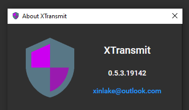

我发布了 XTransmit 0.5.3 版本，版本号初始设置是 0.5.0 经过小幅更新和一些完善即升级到了 0.5.3。版本号的最后一个数字（19142）只和 Build 有关，每次 Build 都会变化，没有其他意义。

XTransmit 0.5.3
下载软件包解压缩到任意文件夹（建议路径中不要包含特殊字符），执行 XTransmit.exe 即可。软件运行会在当前目录创建 binary 和 datas 2 个文件夹，binary 里是可执行文件，datas 里是你的数据，包括添加的服务器、IP 地址、UA 列表、站点模板、配置等。
软件框架可以支持多国语言，不过目前只有英文，中文没有加进去。语言字符串都有 Key，这些 Key 可能会在开发过程中发生变动，如果一开始就包括了多国语言那会增加 Key 变动时的工作量，当语言组织的比较完善时就会有多国语言了。我的英文表达是个大问题，如果看到软件界面有表述不对的地方可以反馈，通过 GitHub Issues 或是本文评论都可以，我核实了都会纠正的。
刚出的软件肯定会有很多问题，尽管我已经做了不少测试，但肯定还会有一些纰漏。所以，欢迎反馈。